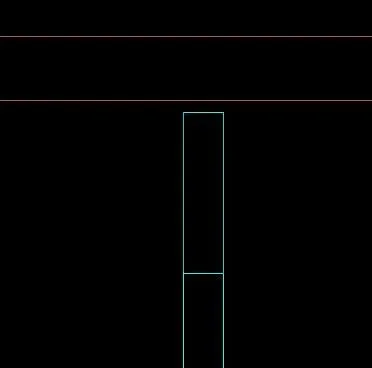
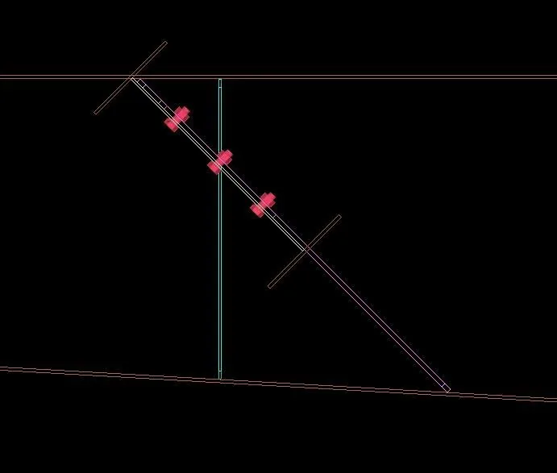
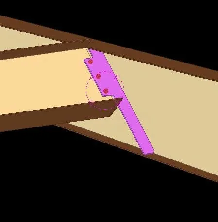

Shear (CC1) 2.02 — có gì mới
Bản 2.02 (tính từ 1.60) mở rộng Shear (CC1) sang liên kết dầm vào cột, thêm offset chiều cao / chiều dài gân cho cả liên kết dầm-dầm, và cho bản mã chạm sát cả hai cánh khi dầm chính là dầm PEB dốc hoặc dầm tổ hợp thay đổi tiết diện. Kèm theo là các bản sửa cho Copy, Tekla 2022 và bảng Properties.
Tóm tắt nhanh
- Dầm vào cột: bản mã, gân và bu-lông; lật bản mã bằng Gusset Position.
- Offset chiều cao / chiều dài gân chỉnh khe hở giữa gân và mặt trong cánh, dùng cho cả dầm vào cột lẫn dầm vào dầm.
- Dầm chính PEB dốc, dầm tổ hợp thay đổi tiết diện: bản mã chạm sát cánh trên và cánh dưới (trước đây hụt khoảng 33 mm ở dầm cao).
- Sửa lỗi: mất liên kết khi Copy, Tekla 2022 không giữ giá trị Apply, bảng Properties đóng khi mở Properties của PEB Member, số phiên bản ở tab About.
1. Liên kết dầm vào cột
Shear (CC1) nay dựng được cả liên kết dầm vào cột theo kiểu liên kết Column with stiffeners S (187) của Tekla: bản mã, bốn gân và bu-lông trong một lần chọn.
- Dầm xiên trên mặt bằng không còn bị bản mã xuyên vào bụng cột.
- Gusset Position lật bản mã sang phía bụng dầm đối diện khi cần.
- Hai ô offset chiều cao / chiều dài gân trong hộp thoại chỉnh khe hở giữa gân và mặt trong hai cánh cột: giá trị dương thì gân lùi vào, giá trị âm thì gân lấn ra.
2. Offset chiều cao / chiều dài gân cho liên kết dầm vào dầm
Hai ô offset chiều cao / chiều dài gân giờ dùng được cho gân của liên kết dầm vào dầm, để chỉnh khe hở giữa gân và mặt trong cánh dầm chính giống như ở liên kết dầm vào cột.

3. Dầm chính PEB dốc và dầm tổ hợp thay đổi tiết diện
Khi dầm chính là dầm PEB dốc hoặc dầm tổ hợp thay đổi tiết diện (chiều cao thay đổi theo chiều dài), bản mã bám đúng bụng dầm và chạm sát cả cánh trên lẫn cánh dưới, kể cả khi dầm phụ xoay nghiêng 45°. Trước đây, ở dầm cao, mép dưới bản mã có thể hụt khỏi cánh dưới; đo trên mô hình thật, khoảng hở giảm từ 33 mm xuống 2 mm.


4. Các lỗi đã sửa
- Copy / Copy Special: liên kết không còn bị mất khi sao chép cả cụm (chọn assembly); plugin tự tìm lại dầm phụ theo vị trí và xác định đâu là dầm chính, đâu là dầm phụ.
- Tekla 2022: giá trị đã Apply trong hộp thoại được giữ khi tạo liên kết mới, kể cả sau khi mở lại một liên kết có sẵn.
- Bảng Properties của Shear (CC1) không còn tự đóng khi bạn mở Properties của PEB Member; bảng chỉ đóng khi bấm OK, Cancel hoặc nút ✕.
- Tab About hiển thị đúng số phiên bản đang cài.
Nếu vẫn gặp lỗi khi sao chép liên kết, hãy gửi mô hình mẫu trong nhóm Zalo bên dưới để iViDLab kiểm tra.
5. Cách nâng cấp
- Ở mục Tải về bên dưới, tải gói
iVidLab.FloorBeamGusset_2.02P.tsep(một gói cho Tekla 2016 trở lên). - Nếu đã cài bản cũ, gỡ bản cũ trong Tekla Extension Manager trước.
- Nhấp đúp file
.tsep, tick phiên bản Tekla rồi bấm Import. Gói được cài khi Tekla khởi động lần tiếp theo.
Shear (CC1) 2.02 — what's new
Version 2.02 (changes since 1.60) extends Shear (CC1) to beam-to-column connections, adds the stiffener height / length offset fields to beam-to-beam connections too, and makes the gusset reach both flanges when the main beam is a sloped PEB beam or a built-up variable-section beam. It also brings fixes for Copy, Tekla 2022 and the Properties dialog.
At a glance
- Beam to column: gusset, stiffeners and bolts; flip the gusset with Gusset Position.
- Stiffener height / length offset fields set the gap between the stiffeners and the inner face of the flanges, for both beam-to-column and beam-to-beam.
- Sloped PEB and built-up variable-section main beams: the gusset reaches both the top and bottom flange (it used to stop about 33 mm short on deep beams).
- Fixes: connections lost on Copy, Tekla 2022 not keeping Applied values, the Properties dialog closing when PEB Member properties open, the version number on the About tab.
1. Beam-to-column connections
Shear (CC1) now also builds beam-to-column connections in the style of Tekla's Column with stiffeners S (187): gusset, four stiffeners and bolts in one pick.
- Beams that are skewed in plan no longer push the gusset into the column web.
- Gusset Position flips the gusset to the opposite side of the beam web when needed.
- The two stiffener height / length offset fields in the dialog set the gap between the stiffeners and the inner face of both column flanges: positive moves the stiffener in, negative moves it out.
2. Stiffener height / length offset for beam-to-beam connections
The two stiffener height / length offset fields now also apply to the stiffeners of beam-to-beam connections, setting the gap between the stiffener and the inner face of the main beam flange, just as for beam-to-column.
3. Sloped PEB and built-up variable-section main beams
When the main beam is a sloped PEB beam or a built-up variable-section beam (depth changing along its length), the gusset follows the web and reaches both the top and the bottom flange, even with the secondary beam rotated 45°. On deep beams the bottom edge of the gusset used to stop short of the bottom flange; measured on a real model, the gap went from 33 mm down to 2 mm.
4. Fixes
- Copy / Copy Special: connections are no longer lost when you copy a whole assembly; the plugin finds the secondary beam again by position and works out which beam is the main beam.
- Tekla 2022: values you Apply in the dialog are kept for new connections, also after reopening an existing one.
- The Shear (CC1) Properties dialog no longer closes when you open the PEB Member properties; it only closes on OK, Cancel or the ✕ button.
- The About tab shows the installed version number correctly.
If copying a connection still goes wrong, share a sample model in the Zalo group below so iViDLab can check it.
5. How to upgrade
- In the Download section below, get
iVidLab.FloorBeamGusset_2.02P.tsep(one package for Tekla 2016 or newer). - If an older version is installed, uninstall it in Tekla Extension Manager first.
- Double-click the
.tsepfile, tick your Tekla version and click Import. It is installed the next time Tekla starts.
Tải vềDownload

Nhóm Zalo người dùng iViDLabiViDLab user group on Zalo
Quét mã QR hoặc bấm nút bên cạnh để vào nhóm: hỏi đáp khi sử dụng, báo lỗi và nhận thông báo bản cập nhật mới.
Scan the QR code or use the button to join the group: usage questions, bug reports and new release announcements.
Liên hệ iViDLabContact iViDLab
Theo dõi fanpage Facebook hoặc gửi email để được hỗ trợ và góp ý.
Follow the Facebook page or send an email for support and feedback.